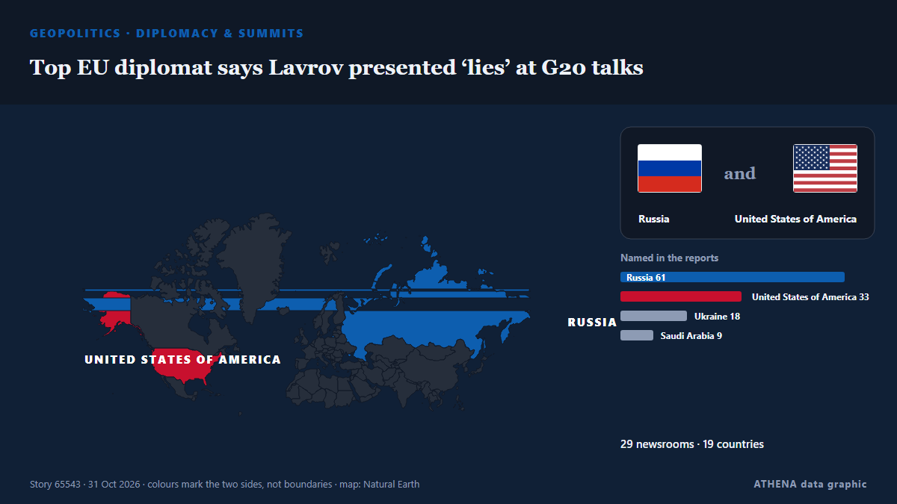

Top EU diplomat says Lavrov presented ‘lies’ at G20 talks

Russian foreign minister Sergei Lavrov's appearance at the two-day gathering of foreign ministers fuelled tensions with European representatives. из Free Malaysia Today
Независимые источники: 29 изданий в 19 странах, с 30 окт.; первым сообщил Anadolu Agency (English); освещение идёт на спад. ATHENA оценивает риск как повышенный (4.5/10), прежде всего из-за тяжести описываемого ущерба и географического и отраслевого охвата. Уверенность — 92 % (высокая); подтверждают независимые источники: 29 изданий, средняя надёжность источников — 76 %. СМИ по странам: Турция (4), Сингапур (4), Россия (3). Освещение: с 30 окт. по 31 окт., 19 ч.
Почему это важно: События в сфере безопасности и дипломатии могут менять союзы, торговлю и рынки далеко за пределами непосредственно затронутых стран.
Что изменилось: 40 новых сообщений от 29 редакций за 24 часа до 31 окт..
Первый заголовок: China backs South Africa to attend G20 meetings as US set to host top diplomats
Заголовки приводятся на английском языке, как они были опубликованы.
Коротко в цифрах
Отобрано, оценено и написано по опубликованной методологии ATHENA. Ни один редактор не вмешивается в отдельные события. Как это создаётся ›
| 30 Oct 09:24 UTC | 4 |
|---|---|
| 30 Oct 10:24 UTC | 2 |
| 30 Oct 11:24 UTC | 0 |
| 30 Oct 12:24 UTC | 2 |
| 30 Oct 13:24 UTC | 1 |
| 30 Oct 14:24 UTC | 2 |
| 30 Oct 15:24 UTC | 3 |
| 30 Oct 16:24 UTC | 2 |
| 30 Oct 17:24 UTC | 4 |
| 30 Oct 18:24 UTC | 2 |
| 30 Oct 19:24 UTC | 3 |
| 30 Oct 20:24 UTC | 1 |
| 30 Oct 21:24 UTC | 1 |
| 30 Oct 22:24 UTC | 5 |
| 30 Oct 23:24 UTC | 1 |
| 31 Oct 00:24 UTC | 3 |
| 31 Oct 01:24 UTC | 2 |
| 31 Oct 02:24 UTC | 0 |
| 31 Oct 03:24 UTC | 2 |
| 31 Oct 04:24 UTC | 0 |
| 31 Oct 05:24 UTC | 0 |
| 31 Oct 06:24 UTC | 1 |
| 31 Oct 07:24 UTC | 0 |
| 31 Oct 08:24 UTC | 0 |
| 31 Oct 09:24 UTC | 1 |
| 30 Oct 09:36 UTC | 0.0 |
|---|---|
| 30 Oct 18:48 UTC | 1.3 |
| 30 Oct 20:12 UTC | 2.3 |
| 30 Oct 20:49 UTC | 5.0 |
| 31 Oct 10:08 UTC | 4.5 |
Откуда эти цифры
Значимость
Риск
Уверенность
Освещение — кто сообщил и когда
заголовок в оригинале · открывает источник- Anadolu Agency (English) · ТурцияChina backs South Africa to attend G20 meetings as US set to host top diplomats
- TASS (English) · РоссияPress review: EU, NATO try to hinder Ukraine peace and Russia seeks constructive G20 talks
- The Straits Times · СингапурRifts over wars in Ukraine, Middle East loom over G-20 meeting in US
- RFE/RL (English) · INTG20 Diplomats Meet In Atlanta Amid Divisions Over Russia, Ukraine
- Al-Monitor · Соединенные ШтатыRifts over wars in Ukraine, Middle East loom over G20 meeting in US
- Al-Monitor · Соединенные ШтатыRubio urges G20 cooperation amid rifts over wars in Ukraine, Middle East
- Arab News · Саудовская АравияSaudi FM takes part in G20 foreign ministers meeting in Atlanta
- TASS (English) · РоссияStates of global majority willing to expand ties with Russia, despite geopolitics — Lavrov
- Stuff · Новая ЗеландияG20 diplomats, including from China and Russia, face deep rifts as they prepare to meet in Atlanta
- Anadolu Agency (English) · ТурцияG20 foreign ministers' meeting kicks off in US amid global tensions
- The Independent · ВеликобританияG20 leaders photo scrapped after Europe refuses to be pictured with Russia
- The Straits Times · Сингапур‘No normalcy with Russia’: G-20 foreign ministers skip photo-op over Lavrov’s presence
- Kurdistan24 (English) · ИракRubio Urges G20 Unity, Divisions Mount
- Anadolu Agency (English) · ТурцияGerman foreign minister rules out joint G20 family photo with Russia's Lavrov
- The Korea Times · Республика КореяUS scraps G20 photo after European diplomats object to being pictured with Russia's Lavrov
- Euronews English · ФранцияEU diplomats object to G20 photo with Lavrov, prompting US cancellation
- BBC News · ВеликобританияG20 'family photo' cancelled after protests over presence of Russian minister
- Sydney Morning Herald · АвстралияUS cancels G20 ‘family photo’ after Europeans, Australia object to Russia
- Kyiv Independent · УкраинаG20 family photo allegedly canceled over Russian presence
- Fortune · Соединенные ШтатыU.S. scraps G20’s opening photo after Europeans balk at posing with Russia’s Lavrov
- Ukrainska Pravda (English) · УкраинаPolish foreign minister says he has a message for Lavrov at G20 meeting
- NDTV · ИндияG20 Ministers Skip Photo Op In Iran As Russia-Ukraine War Creates Rifts
- Kyiv Post · УкраинаEuropean Diplomats Refuse to Pose for Photo With Russia’s Lavrov at G20
- Al Jazeera English · КатарRubio hosts G20 talks as Russia’s Lavrov presence sparks tensions
- ProtoThema English ·Lavrov becomes the ‘elephant in the room’ at G20 as European ministers refuse to pose for photo with him
- Al Jazeera English · КатарG20 drops group photo as Europeans refuse to stand with Lavrov
- TASS (English) · РоссияRussia welcomes US efforts to depoliticize G20 discussions — Lavrov
- The Straits Times · СингапурTop EU diplomat says Russia’s Lavrov presented ‘lies’ at G-20 talks
- Free Malaysia Today · МалайзияTop EU diplomat says Lavrov presented ‘lies’ at G20 talks
- The Canadian Press (via CityNews) · КанадаAnand says she called out Russian counterpart invited by U.S. to G20 ministerial
- The Straits Times · СингапурRussia's Lavrov says inviting Poland to attend G20 meeting breaks diplomatic rules
- ABC News Australia · АвстралияG20 foreign ministers skip 'family' photo amid objections over Russia
- New Straits Times · МалайзияTop EU diplomat says Lavrov presented 'lies' at G20 talks
- The Guardian · ВеликобританияUS cancels G20 ‘family photo’ after Australia, UK and others refuse to appear with Russia
- Anadolu Agency (English) · ТурцияRussian foreign minister says he had 'not bad, though brief' talks with Rubio on G20 sidelines
- Middle East Eye · INTSaudi and Russian foreign ministers discuss Hormuz, Yemen at G20
- DW English · ГерманияEuropean diplomats shun Russia at G20 gathering in the US
- Greek Reporter · ГрецияG20 Summit Opens Amid Diplomatic Tensions as Group Photo Canceled Over Russia’s Presence
- NDTV · ИндияUS Scraps Traditional G20 Photo As Europeans Object To Posing With Russia's Lavrov
- Arab News · Саудовская АравияG20 foreign ministers to end Atlanta meeting without consensus on key issues